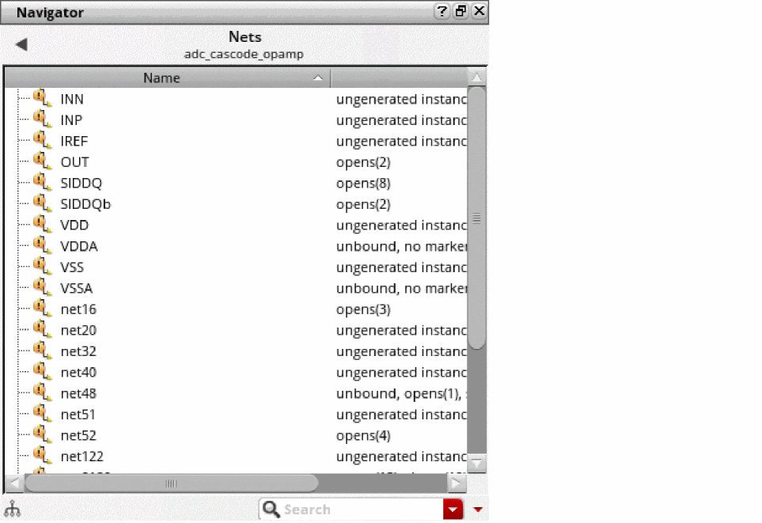

Selecting and Deselecting Nets in Navigator
When you select a net in the Navigator assistant, Layout XL selects the net (or its flight line if it is not yet routed) and all the shapes associated with that net in the design. Additionally, any lower-level nets associated with the selected net are highlighted on the canvas. Likewise, when a top-level net is deselected, highlights on its associated lower-level nets are removed. For a better view of the highlighted nets, Display Depth should be set to a value higher than 0 and Hierarchy Depth should be set to display a higher number of hierarchy levels.
You need to select nets to perform pin optimization tasks, edit net criticality, and so on.
-
From the layout window menu bar, choose Windows – Assistant – Navigator.
The Navigator assistant is displayed.
 - Use the Show drop down in the toolbar to display only the Nets in the design.
-
Locate the net you want to work on in the list and click it to select it.
The net you selected (or its flight line if it is not yet routed) is highlighted in the design window, along with all the shapes on that net.
The option to probe flight lines is off by default. You set it on the Highlight Options form available using the Options – Highlight menu pick.
Related Topics
Return to top